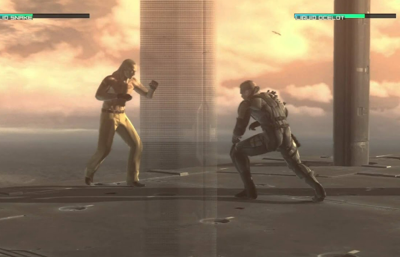
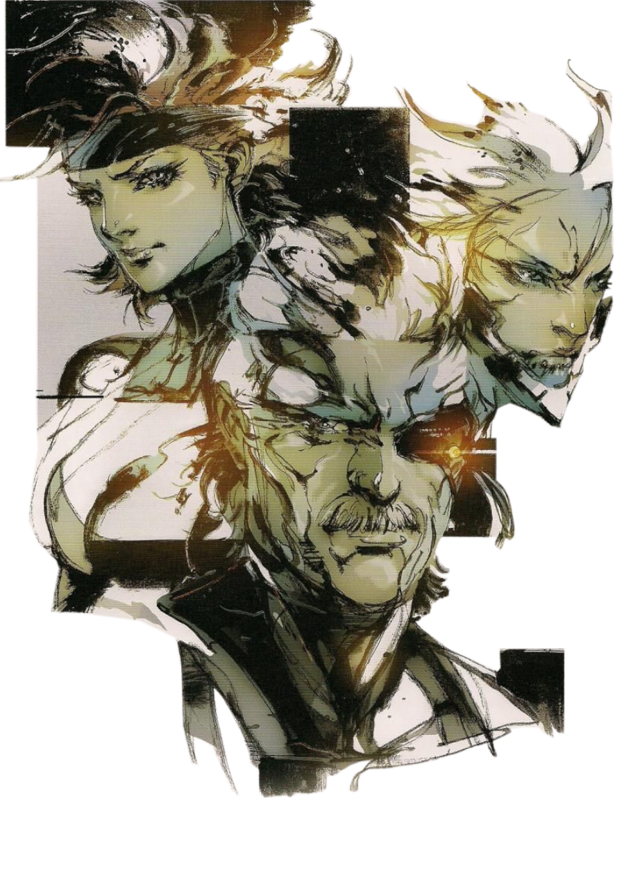
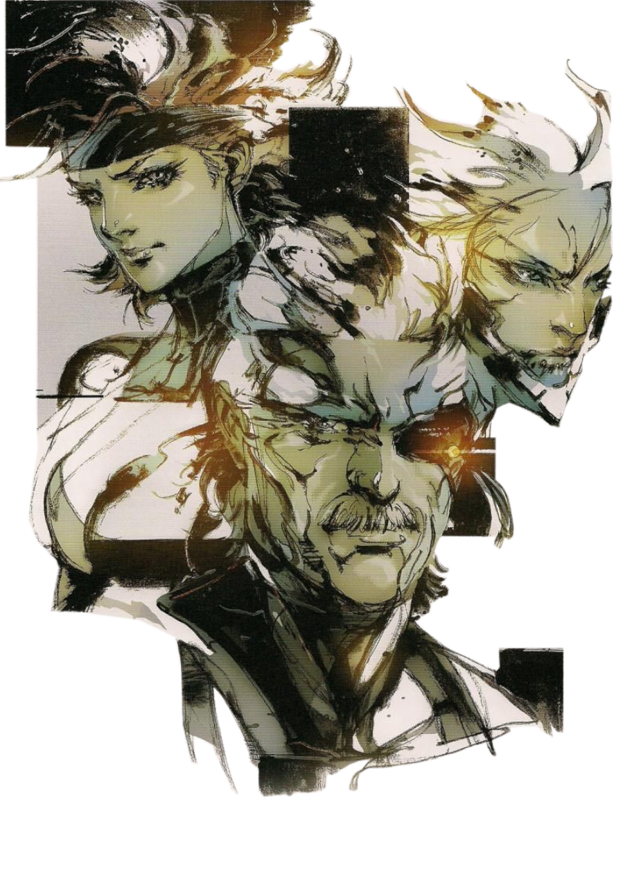

La guerra ha cambiado
La historia se sitúa en el año 2014, cinco años después del Incidente Manhattan.
Solid Snake aparece considerablemente envejecido debido a su avanzada degeneración celular,
establecido desde un principio en el proceso de clonación que lo creó.
Metal Gear Solid 4 retrata un mundo donde el dominio militar en tierras extranjeras es el objetivo
para dominar la economía, llevando a mercenarios a pelear grandes batallas con fines financieros mediante las PMC/PNC.
Sin embargo, cinco de las grandes PMCs están empeñadas en formar una sola gran compañía: Outer Heaven,
nombre de la compañía de mercenarios de Big Boss.
Esta organización está al mando de Liquid Ocelot, quien tiene la capacidad de tomar el control total
sobre las nanomáquinas de los soldados.
Con el mundo una vez más en crisis, Solid Snake es reclutado por Roy Campbell quien ahora trabaja para
la ONU como asesor y le pide ayuda a Snake para detener a Liquid, acompañado por el Dr. Emmerich.
Arma biológica
Snake planea aprovechar las ventajas de un levantamiento rebelde en la zona para así, pasar desapercibido en la base de Pieuvre Armement, otra base manejada por Liquid, donde Naomi se encuentra.
Snake se infiltra en la zona y una vez más se encuentra con Drebin, quien revela que los Patriots son en realidad una red de cinco IA.
También le revela que hay un equipo élite conocidos como Beauty and Beast.
Después, Snake se encuentra con Naomi y ella le explica que Líquid ha planificado el uso del ADN de Big Boss
para encontrar al sistema JD y tomar el control de SOP, el sistema de nanomáquinas y ID-autenticaciones que permiten a los Patriots vigilar y controlar a los soldados.
Sin embargo, acotó que su vida era lo que menos le preocupaba ya que el hecho de que el virus FOXDIE esté
en su cuerpo crea una mutación el cual ya ha comenzado y se estima que en 3 meses el virus haya
mutado lo suficiente como para atacar a todos; se ha convertido en ‘un arma biológica ambulante‘.
Un último aliento

Los Marines de EE. UU. tenían más de las que acaban de dejar indefenso a Outer Heaven, su tripulación desactivada y sus soldados en un estado de retiro de las nanomáquinas SOP. En la confusión,
Ocelot toma a la vela de Outer Heaven y le agradece el cumplimiento de los propios objetivos de Liquid. Su plan para el uso del rail
gun de REX era sólo una distracción a fin de que los propios intentos de Snake de derrocar el sistema pasaran desapercibidas
a los ojos de los Patriots, que había previsto la intención de Snake de detener a Liquid.
Después de esta revelación, la personalidad
de Liquid declara que tienen "una deuda que resolver", y actúa sobre su último deseo en el cuerpo de Ocelot:
una lucha sin armas contra Solid Snake, siendo esta un especie de revancha desde la pelea que tuvieron
arriba de REX en Metal Gear Solid.
A medida que la pelea avanza, se comienzan a notar cambios en el estilo de pelea de Liquid,
pareciéndose más a los de Ocelot en MGS3. Liquid es derrotado por última vez, desapareciendo su personalidad y
con ello, hace regresar a Ocelot.

 
